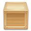

Table of Contents
Documentation for LemonLDAP::NG 2.0
Installation
Before installation

Installation
After installation
- Deploy Nginx configuration (recommended configuration)
Configuration
Premiers pas
Portail
Bases de données d'authentification, des utilisateurs et des mots-de-passe
| Official Backends | Authentification | Utilisateurs | Mot-de-passe |
|---|---|---|---|
| Active Directory | ✔ | ✔ | |
| Apache (Kerberos, NTLM, OTP, ...) | ✔ | ||
| CAS | ✔ | ||
| Bases de données (DBI) | ✔ | ✔ | ✔ |
| Démonstration | ✔ | ✔ | ✔ |
| ✔ | ✔ | ||
| LDAP | ✔ | ✔ | ✔ |
| Null | ✔ | ✔ | ✔ |
| OpenID Connect | ✔ | ✔ | |
| Proxy LL::NG | ✔ | ✔ | |
| Radius | ✔ | ||
| REST | ✔ | ✔ | ✔ |
| SAML 2.0 / Shibboleth | ✔ | ✔ | |
| Slave | ✔ | ✔ | |
| SSL | ✔ | ||
| ✔ | |||
| WebID | ✔ | ✔ | |
| Yubikey | ✔ | ||
| Combo Backends | Authentification | Utilisateurs | Mot-de-passe |
| Choice by users | ✔ | ✔ | ✔ |
| Combination of auth schemes | ✔ | ✔ | |
| | Deprecated, replaced by Combination | ||
| Obsolete Backends | Authentification | Utilisateurs | Mot-de-passe |
| OpenID | ✔ | ✔ | |
| LL::NG distant | ✔ | ✔ | |
| Second factor | Authentification | ||
| U2F | ✔ | ||
Base de données de la configuration
LL::NG a besoin d'un dispositif de stockage de sa propre configuration (gérée par le manager). Choisir l'une des options suivantes :
| Backend | Partageable | Commentaire |
|---|---|---|
| File (JSON) | Not shareable between servers except if used in conjunction with SOAP or with a shared file system (NFS,…). Sélectionné par défaut lors de l'installation. | |
| SQL (RDBI/CDBI) | ✔ | |
| LDAP | ✔ | |
| MongoDB | ✔ | |
| SOAP | ✔ | Backend proxy à utiliser avec un autre backend de configuration. Peut être utilisé pour sécuriser un autre backend pour des serveurs distants. |
On ne peut démarrer avec une configuration vide, il faut donc lire comment changer de backend de configuration pour convertir une configuration existante en une autre.
Base de données des sessions
Les sessions sont stockées en utilisant les modules de la famille Apache::Session. Tous les modules de type Apache::Session sont utilisables excepté pour quelques fonctionnalités.
| Backend | Partageable | Explorateur de sessions | Resctriction d'ouverture de session | Expiration des sessions | Commentaire |
|---|---|---|---|---|---|
| File | ✔ | ✔ | ✔ | Pas partageable entre serveurs sauf si utilisé avec le backend de configuration SOAP ou un système de partage de fichiers (NFS,…). Sélectionné par défaut lors de l'installation. | |
| SQL | ✔ | ✔ | ✔ | ✔ | Pas optimisé pour l'exlorateur de sessions et les fonctionnalités de session unique. |
| LDAP | ✔ | ✔ | ✔ | ✔ | |
| Redis | ✔ | ✔ | ✔ | ✔ | Le plus rapide. Doit être securisé par un contrôle d'accès réseau. |
| MongoDB | ✔ | ✔ | ✔ | ✔ | Doit être securisé par un contrôle d'accès réseau. |
| Browseable (SQL, Redis ou LDAP) | ✔ | ✔ | ✔ | ✔ | Optimisé pour l'explorateur de sessions et les fonctionnalités de session unique. |
| SOAP | ✔ | ✔ | ✔ | ✔ | Backend proxy à utiliser avec un autre backend de sessions. Peut être utilisé pour sécuriser un autre backend pour des serveurs distants. |
Fournisseur d'identité
- Tous les protocoles de fournisseur d'identité peuvent être utilisés simultanément
Protection des applications
Well known compatible applications
Here is a list of well known applications that are compatible with LL::NG. A full list is available on vendor applications page.
Fonctionnalités avancées
Mini howtos
- Créer un proxy de protocoles (SAML vers OpenID, CAS vers SAML ,…)
Exploitation
Developer corner
To develop an handler, see:
To develop a portal plugin, see manpages:
- Lemonldap::NG::Portal
- Lemonldap::NG::Portal::Auth::Base
- Lemonldap::NG::Portal::Main::Issuer
- Lemonldap::NG::Portal::Main::Plugin
To add a new language (XX must be replace by your language code):
- Manager: translate
lemonldap-ng-manager/site/static/languages/en.jsoninlemonldap-ng-manager/site/static/languages/XX.jsonand enable it in “lemonldap-ng.ini” file - Portal: translate
lemonldap-ng-portal/site/static/htdocs/languages/en.jsoninlemonldap-ng-portal/site/htdocs/static/languages/XX.jsonand enable it in “lemonldap-ng.ini” file
To translate this doc (Manager help):
- Install OmegaT
- Launch “make XX-translation” and translate all
- Launch “make XX-doc” to build doc